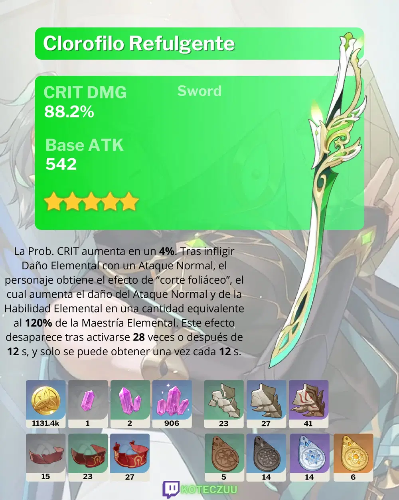
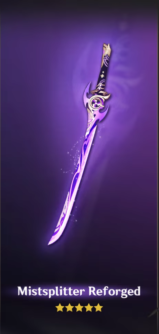
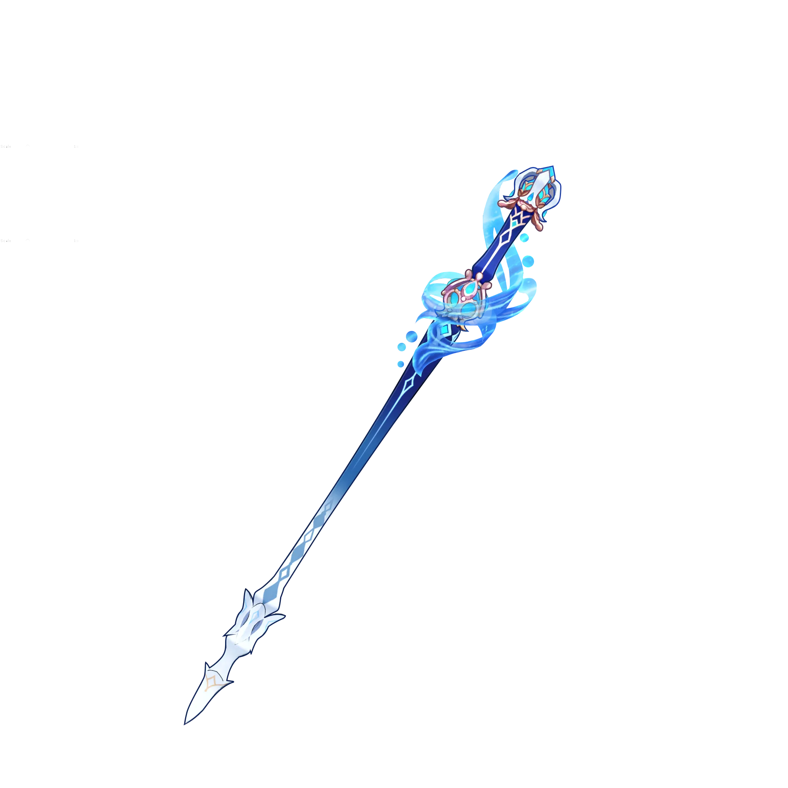
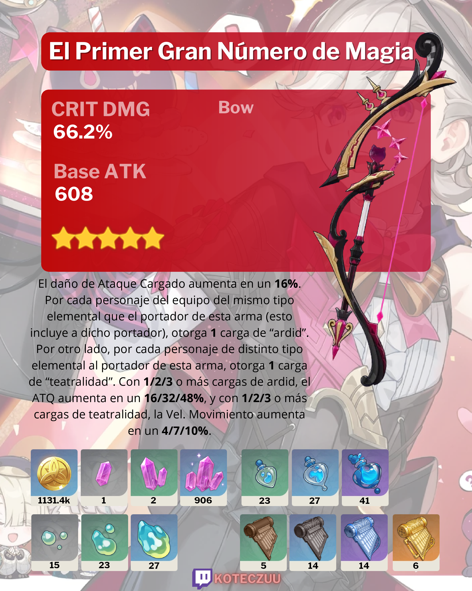
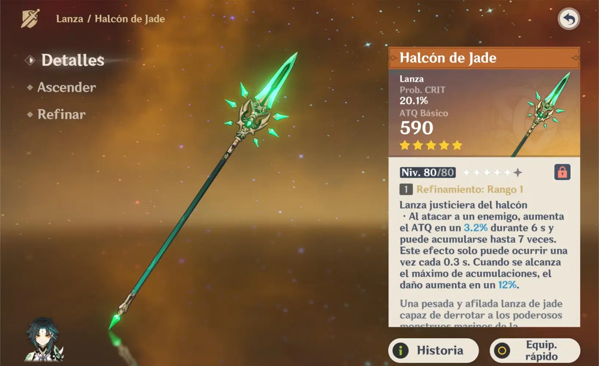
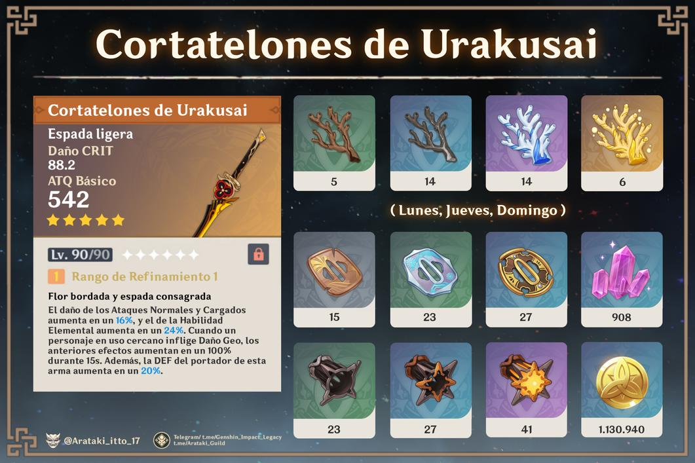

Clorofilo refulgente
Una espada con ornamentación dorada fabricada a partir de unas valiosas ramas blancas. En el pasado su filo atravesó en innumerables ocasiones el veneno que se cernía sobre el bosque.
Reflejo de las tinieblas
Una espada que centellea con una fría e intensa luz violeta. La palabra “reflejo” de su nombre se debe a los fragmentos del pasado que se reflejan en ella.
Luz de las tinieblas
Una naginata que se usa para cortar hierba. Cualquier ejército que se enfrente a esta arma también se verá arrancado del suelo.

Fulgor de las aguas calmas
Un cetro alrededor del cual gira un agua de extrema pureza. En un pasado muy remoto, simbolizaba la máxima autoridad sobre los mares.
El primer número de la magia
La herramienta mágica utilizada por cierta gran maga del pasado. El secreto detrás de ella era que, en realidad, se trataba de un arma muy singular.
Halcón de jade
Una pesada y afilada lanza de jade capaz de derrotar a los poderosos monstruos marinos de la antigüedad.
Cortatelones de Urakusai
Una espada forjada bajo la supervisión del ilustre Urakusai. Cuenta la leyenda que no le ha quitado la vida a ningún ser vivo en los últimos siglos.
